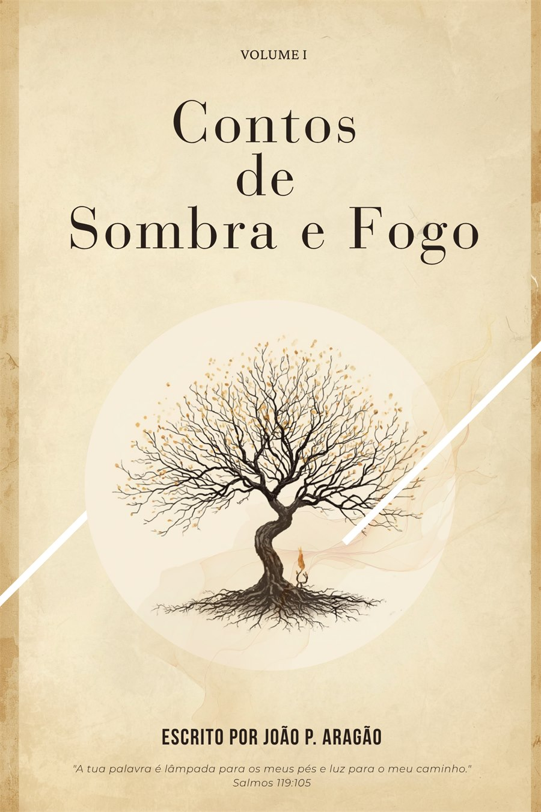

Volume completo
Contos de Sombra e Fogo
Após encontrar uma carta deixada pela avó, Jonathan começa a descobrir a verdade sobre a Escola Monte Horebe e sobre um chamado que atravessa gerações. Uma história de fantasia contemporânea sobre herança, fé, sombra e transformação.
Fantasia contemporânea
Volume I
Completo no Wattpad